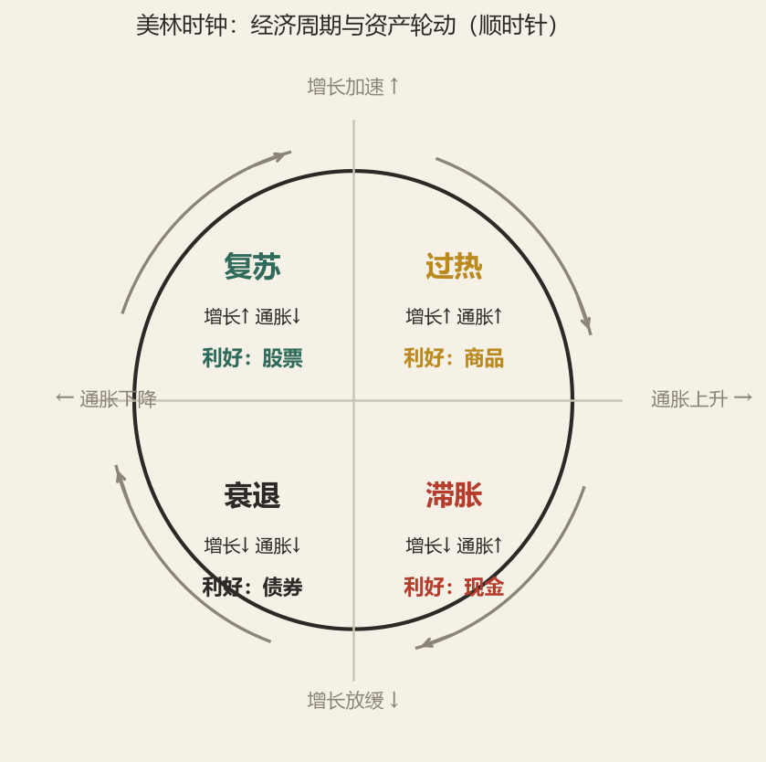

险企投资实务
6.0险资管理的三个特殊约束
保险公司投资与公募基金、银行理财的根本区别，来自它的负债。理解这三个约束，就理解了险资所有「看起来保守」的行为。
安全性
保险是「先收钱后赔」，资金本质是「对保户的负债」，必须绝对安全
收益性
要覆盖定价利率 + 费用，否则利差损；但必须「在安全的前提下」
流动性
应对赔款、退保、满期给付的现金需求，必须匹配负债的流动性
匹配性（久期）
资产久期与负债久期匹配，防止利率风险（ALM 的核心）
我国保险资金投资领域（可投范围）。
看答案要点
按 CH.01 的框架：银行存款、债券、股票、基金、不动产、未上市股权、基础设施、金融产品、境外投资、衍生品（仅对冲）。
负向记忆更高效：不能投的 = 与保险主业无关、风险过高、监管禁止的（如直接投资期货投机、贷款给一般企业等）。
6.1资金运用的组织形式
「钱由谁来管、怎么管」——这是险资投资管理的第一个制度问题。三种模式各有优劣，考试常考「选择依据」。
一、三种组织形式
| 模式 | 含义 | 优点 | 缺点 | 适用 |
|---|---|---|---|---|
| 内部投资部 | 公司自建投资团队、自有资金自管 | 控制力强、信息保密、利润内部化 | 人才成本高、规模不足时效率低 | 大型险企（国寿、平安、太保） |
| 委托管理（委外） | 委托专业资管机构（含集团内保险资管） | 专业化、规模经济、快速起步 | 委托-代理问题、信息不对称、管理费 | 中小险企、新设公司 |
| 混合模式 | 核心资产自管 + 专业化委外 | 兼顾控制与专业 | 管理复杂度高 | 大多数中型险企 |
支持保险资金参控股商业银行的机构。
看答案要点
该题考的是「保险机构能否投资/参控股商业银行」的政策背景。监管对保险资金投资银行股权持有条件的支持态度，相关文件为《保险公司投资商业银行股权》等规定（呼应 CH.01 的股权投资 79 号文及后续修订）。
答题方向：保险资金参控股商业银行需满足「偿付能力充足、资本实力、公司治理、风险隔离」等条件，目的是实现「产融结合、获取长期稳定回报、延伸保险产业链」。
6.2资金运用流程：五步闭环
险资投资不是「选股」，而是一条从负债分析到绩效评估的流水线。每一步都可考、每一步都环环相扣。
负债分析
梳理负债久期、现金流、保证利率 → 确定投资目标与约束
战略资产配置
基于 ALM 定各类资产的长期基准权重（见 CH.05）
投资执行
按 SAA 落地为具体证券，含委外与选券
风险监控
久期缺口、VaR、限额、压力测试（见 CH.05）
绩效评估
投资收益率、配置/选择归因、久期匹配度
与负债目标对比
是否覆盖定价利率？是否守住偿付能力？
调整 SAA
根据评估结果与负债变化，滚动修订配置
回到负债分析
负债结构变化（新单、退保）重新触发
6.3投资绩效评估：险资的独特视角
险资的绩效评估，不能照搬基金的「收益率排名」。它有三个独特维度，考试与实务都要掌握。
一、险资绩效评估的三个维度
| 维度 | 指标 | 为什么重要 |
|---|---|---|
| ① 绝对收益 vs 负债成本 | 投资收益率 − 定价利率（利差） | 险资的第一目标是「覆盖负债成本」，不是「跑赢大盘」。哪怕收益率低，只要高于定价利率就是安全 |
| ② 风险调整收益 | Sharpe、Treynor、α、信息比率 | 在同等收益下，风险越小越好（见 CH.05） |
| ③ 资产负债匹配度 | 久期缺口、现金流匹配、免疫误差 | 险资独有维度：即使投资收益高，若久期严重错配，利率一波动净值就崩 |
基准一：绝对基准（覆盖负债成本：定价利率 + 费用）
基准二：相对基准（相对市场指数 / 同业，评价投资能力）
成熟做法：以「绝对基准」为底线（必须覆盖负债成本），以「相对基准」为追求（跑赢同业/市场）。
会计视角的补充：险资考核还要区分「会计利润」（当期损益）与「综合收益」（含公允价值变动的浮盈浮亏）。IFRS17 下，资产的分类（FVTPL / FVOCI / AC）会直接影响利润波动，因此考核要「利润 + 综合收益 + 资产负债匹配」三者并重。
6.4资产负债管理（ALM）核心
ALM 是险资投资实务的「最高统领」——它把资产端和负债端当作一个整体来管理。这一节是本章的「魂」，也是全科与精算主业连接最紧密的地方。
一、ALM 要解决的三个问题
② 现金流匹配：使每期资产现金流覆盖负债现金流，免疫再投资风险与流动性风险
③ 情景与压力测试：模拟利率、市场、退保等极端情景，检验净资产与偿付能力的韧性
二、久期缺口模型（承 CH.04、CH.05）
ΔE ≈ −[DA·A − DL·L] × Δy/(1+y)
= −(DA − k·DL) × A × Δy/(1+y)，k = L/A
判断：DA > k·DL（正缺口）→ 利率上升净资产受损；
DA < k·DL（负缺口）→ 利率下降净资产受损。
传统寿险通常 DL 很长，呈现「负债久期 > 资产久期」的结构性缺口 → 最怕利率下行
一句话记住寿险 ALM 的核心矛盾：「长负债、短资产」→ 利率下行是最大敌人。
① 拉长资产久期：超长期国债（30/50 年）、长久期非标、利率互换（收固定付浮动）；
② 结构优化：用「杠铃策略」（短端保证流动性 + 长端匹配久期）平衡流动性与匹配度；
③ 动态调整：随利率变化与负债结构变化，滚动再平衡（呼应 CH.05 的再平衡）。
保险公司的资产负债管理为何强调「资产与负债久期匹配」？请结合利率风险说明。
看答案要点
① 为什么有缺口：寿险负债久期长（数十年满期给付），市场上缺乏足够长的资产，形成「负债久期 > 资产久期」的结构性缺口。
② 缺口的后果：利率下行时，负债（准备金）现值增幅超过资产增幅，净资产受损（利差损）；利率上行时方向相反。
③ 匹配的作用：使资产价值变动与负债价值变动同向同幅度，利率变动时净资产基本不变（免疫）。
④ 匹配的局限：完整免疫还需「凸度约束」（资产凸度 > 负债凸度）与「现金流匹配」；且负债久期本身随利率变化（凸性），需动态调整。
6.5与监管、偿付能力的联动
险资投资不是「公司想怎么投就怎么投」，它同时受到投资比例监管与偿付能力监管双重约束。这一节把 CH.01 的条文「翻译」成投资决策语言。
一、双层约束的传导链
大类比例上限
权益 30%、不动产 30%、其他金融 25%、境外 15%
集中度限制
单一法人 20%、单一股票 5%、单一基金 20%
风险因子占用资本
偿二代下，高风险资产消耗偿付能力充足率
分级监管（2025 年 12 号文）
偿付能力越高，权益上限越高（五档最高 50%）
6.5+宏观经济、长期资金与战术配置★★★
考纲第六部分的三个要求——「宏观经济对资产配置的影响」「结合负债特征与风险偏好的定性/定量分析」「不同环境下 ALM 与战术配置策略」——都在这一节串成一条链。
一、宏观经济 → 资产配置的传导链
| 政策工具 | 操作 | 对利率/市场的影响 | 险资配置含义 |
|---|---|---|---|
| 货币政策 | 降准降息（宽松） | 利率下行、股债双牛（债先牛、股后牛） | 抢配长久期债 + 适度加权益 |
| 货币政策 | 加息缩表（紧缩） | 利率上行、股债承压 | 缩短久期 + 减权益 + 增现金 |
| 财政政策 | 扩大支出、减税（积极） | 增长预期回升、长端利率上行 | 关注基建/科技等受益板块 |
| 财政政策 | 增发政府债（供给冲击） | 债券供给增加、长端利率承压 | 择机配置「供给释放」后的高票息窗口 |

二、结合负债特征与风险偏好的定量分析框架
目标函数：max 收益，s.t. ①利率风险对冲率 ∈ [50%,150%] ②净投资收益覆盖率 ≥100% ③流动性覆盖率 ≥100% ④大类比例上限 ⑤集中度限制
定性维度（先定性、后定量）：负债久期、保证利率刚性、退保敏感性、风险偏好、资本实力
定量维度（在定性约束下求解）：均值-方差优化、Black-Litterman、情景模拟、压力测试
「先定性、后定量」是险资配置与公募基金的关键区别：公募基金是「给定风险预算求最大收益」；险资是「先划定性约束（监管 + 负债 + 风险偏好），再在可行域内求最优」。负债特征与风险偏好是「定性」的输入，均值-方差等模型是「定量」的求解器。
三、不同经济与资本市场环境下的 ALM 与战术配置策略
| 环境 | 利率 | ALM 策略 | 战术资产配置（TAA） |
|---|---|---|---|
| 低利率 + 资产荒（当前主流） | 低位徘徊 | 拉长资产久期、利率互换锁定、发展分红险（降负债刚性） | 增配高股息权益、长久期债、基础设施；减现金 |
| 复苏 + 温和通胀 | 温和上行 | 缩短久期、关注利差 | 增配权益（周期/价值）、可转债；减长久期债 |
| 过热 + 高通胀 | 快速上行 | 大幅缩短久期、现金缓冲 | 商品、黄金、抗通胀债；低配股债 |
| 滞胀 | 高 + 增长停滞 | 短久期 + 高流动性 | 现金、商品、黄金、短债；低配权益与长久期债 |
四、中长期资金入市政策（2025 年，超越考试的行业变量）
| 要点 | 具体内容 |
|---|---|
| 险资增配 A 股 | 大型国有保险公司从 2025 年起每年新增保费的 30% 用于投资 A 股（含权益类基金） |
| 长周期考核 | 国有保险公司经营绩效实行三年以上长周期考核，净资产收益率当年度考核权重不高于 30%、三年到五年周期指标权重不低于 60% |
| 长期股票投资试点 | 第二批保险资金长期股票投资试点（规模不低于 1000 亿元），后续逐步扩大 |
| 生态优化 | 险资可作为战略投资者参与定增、举牌认定与公募同等待遇、扩大互换便利规模 |
6.6演算器
久期缺口诊断与净资产变动
6.7核心答案速查
| 考点问题 | 核心答案 |
|---|---|
| 险资运用三原则 | 安全性（首要）、收益性（目的）、流动性（保障） |
| 三原则的法律渊源 | 《保险法》第 106 条 |
| 组织形式三种 | 内部投资部、委托管理（委外）、混合模式 |
| 中小险企常用模式 | 核心自管 + 专业委外的混合模式 |
| 险资流程起点 vs 基金 | 险资「负债分析」起点；基金「市场分析」起点（负债驱动 vs 市场驱动） |
| 险资绩效三维度 | 绝对收益 vs 负债成本、风险调整收益、资产负债匹配度 |
| 险资考核双基准 | 绝对基准（覆盖负债成本）+ 相对基准（跑赢市场） |
| ALM 三问题 | 久期匹配、现金流匹配、情景压力测试 |
| 久期缺口公式 | ΔE ≈ −(DA−kDL)·A·Δy/(1+y) |
| 传统寿险的结构性缺口 | 负债久期 > 资产久期 → 最怕利率下行 |
| 免疫的递进 | 久期匹配（一阶）→ 凸度约束（二阶）→ 现金流匹配（终极） |
| 偿二代如何约束投资 | 高风险资产占用更多资本 → 压缩偿付能力 → 反向限制投资 |
| 63 号文分级 | 偿付能力越高，权益上限越高（可至 45%） |
6.8教材深挖与易错辨析
深挖一：「负债驱动投资」与「资产驱动负债」——险资管理的两种哲学
两个相反的逻辑起点
| 负债驱动（LDI，主流） | 资产驱动（逆向，少数） | |
|---|---|---|
| 逻辑起点 | 先看负债（久期、保证、现金流），再配资产 | 先看资产机会（收益），再设计负债产品 |
| 典型做法 | 免疫、现金流匹配、超长期国债 | 投连险、万能险（负债随资产浮动） |
| 风险观 | 利率风险是首要敌人 | 收益不足是首要风险（风险转嫁给客户） |
为什么传统寿险必须「负债驱动」
传统寿险（尤其保证利率较高的存量保单）的负债是刚性的：无论投资赚多少，都要按合同支付。此时唯一的正确做法是「先锁定资产去匹配负债」，而不是「先赌资产涨跌」。赌赢了锦上添花，赌输了就是利差损。
深挖二：IFRS17 与投资端的深层互动——资产分类如何「反噬」利润
资产分类决定利润的「波动方式」
IFRS17 下，负债端用「当前利率」计量，波动加大。此时资产端的会计分类（FVTPL / FVOCI / AC）决定了「浮盈浮亏」进不进利润表，进而决定利润的波动性。
| 分类 | 公允价值变动去向 | 利润波动 | 适用资产 |
|---|---|---|---|
| AC（摊余成本） | 不进利润表 | 低 | 持有至到期的债券 |
| FVOCI（权益） | 进其他综合收益 | 低 | 长期战略持有的股票 |
| FVTPL | 进当期损益 | 高 | 交易性资产 |
与负债端的「会计错配」
若负债用当前利率计量（波动大），而资产用摊余成本（波动小），就会产生会计错配：利率变动时，负债剧烈波动、资产纹丝不动，利润表被负债单边「砸」。为减少错配，公司可能选择「资产端也按公允价值计量」或「重新分类资产」——这就是投资决策被会计准则「反向塑造」的例子。
深挖三：险资「委外」的委托-代理问题与治理之道
委托管理为什么会产生问题
委托人（保险公司）追求「覆盖负债成本 + 控制风险」，受托人（资管机构）追求「管理规模 + 短期排名 + 超额业绩」。目标函数不一致，就是委托-代理问题的根源。
四个治理手段（考试与实务通用）
① 投资指引（Mandate）：把 IPS 细化为可执行的合同——明确基准、可投范围、限制（如个股集中度、久期区间）、止损线；
② 业绩基准与考核周期：用「绝对 + 相对」双基准，考核周期拉长（3–5 年）避免短视；
③ 风险限额体系：VaR、久期缺口、集中度、流动性限额，让受托人「不能越界」；
④ 定期报告与审计：持仓穿透、业绩归因（区分配置/选择）、独立第三方托管。
四个高频易错点
6.9自测
- A. 收益性
- B. 安全性
- C. 流动性
- D. 分散性
看答案与解析
答案：B。
《保险法》第 106 条规定保险资金运用「稳健、安全」，三性原则中安全性是首要（资金本质是保户负债），收益性是目的，流动性是保障。
- A. 利率上行时净资产受益
- B. 利率下行时净资产受益
- C. 该公司存在负久期缺口
- D. 该公司不存在利率风险
看答案与解析
答案：A。
DA(8) < k·DL(15k)，若 k≈1 则 8<15，为负缺口（负债更敏感）。负缺口 → 利率下行净资产受损、利率上行净资产受益，故 A 对。
看答案与解析
优点：专业化、规模经济、快速起步、共享人才与研究资源。
缺点：委托-代理问题（目标不一致）、信息不对称、管理费侵蚀收益、风格漂移风险。
治理手段（四点）：①明确投资指引（Mandate）；②双基准 + 长考核周期（3–5 年）；③风险限额体系（VaR、久期、集中度、流动性）；④持仓穿透、业绩归因、独立托管与审计。
看答案与解析
① PV 匹配：资产现值 = 负债现值；② 久期匹配：资产久期 = 负债久期；③ 凸度约束：资产凸度 > 负债凸度（保证利率任何方向变动资产都占优）。